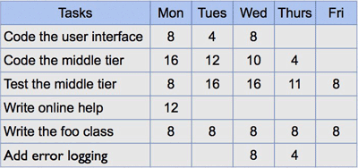

O Sprint Backlog, com muita frequência, é mantido como uma planilha Excel, mas também é possível usar seu sistema de rastreamento de erros ou algum dos vários produtos de software desenvolvidos especificamente para Scrum ou Agile. Um exemplo de como um Sprint Backlog em planilha Excel se parece:
Durante o Sprint, o ScrumMaster mantém o Sprint Backlog, atualizando-o de forma a refletir quais tarefas estão finalizadas e quanto tempo o time acha que levará para completar as que ainda não estão. A estimativa de trabalho restante no Sprint é calculada diariamente e representada graficamente, resultando em um Sprint Burndown Chart .